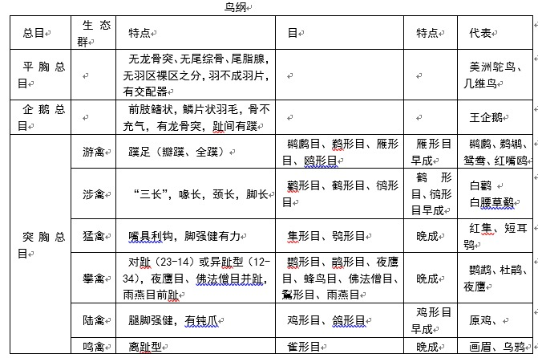

第十七节 · SECTION 17
二、鸟纲的分类
已知现存鸟类约 9700 种，每年平均有 4 个新种被发现。分为三个总目：平胸总目、企鹅总目、突胸总目，约 28 目。其中雀形目就包括 5000 种以上，是鸟类中最高等的类群。
三总目必背：平胸（不会飞）、企鹅（善游泳）、突胸（善飞，绝大多数）。区分关键看龙骨突有无和飞翔能力。
（一）平胸总目（Ratitae）——不会飞的大型走禽
这是一群不会飞的大型走禽，适于奔走，因而存在一系列原始特征：
- 翼退化，羽毛蓬松而分布均匀（无羽区裸区之分）；
- 胸骨扁平而无龙骨突（"平胸"由此得名）；
- 锁骨退化，不具尾综骨和尾脂腺；
- 双足粗大有力；雄鸟具发达交配器官。
仅分布于南半球（非洲、美洲、澳洲南部）。代表动物：鸵鸟、几维鸟。鸵鸟属鸵形目，适应荒原生活，成小群（40～50只）活动，奔跑迅速。
平胸总目"平"＝无龙骨突。原始特征一串：翼退化、无龙骨突、锁骨退化、无尾综骨、无尾脂腺。代表：鸵鸟、几维鸟、鸸鹋。
（二）企鹅总目（Impennes）——善游泳的海生鸟类
这是一群海生的善于游泳的中、大型鸟类，可说是在"另一种介质（水）中的鸟类"。适应性特征：
- 前肢鳍状，后肢短且后移至身体后方，陆上行走近于直立，趾间具蹼；
- 羽毛成鳞片状覆盖全身；皮下脂肪发达；
- 胸骨龙骨突发达（胸肌发达便于游泳），但骨骼沉重，不具充气骨。
仅分布于南半球。代表动物：王企鹅，分布于南极边缘，集成千百只大群繁殖。每产一卵置于冰上，由雄鸟孵卵，56天后孵化，其间雄鸟不进食靠消耗体内脂肪维持。
企鹅总目特点：龙骨突有（善游泳需胸肌）但骨骼沉重无充气骨（不需飞行减重）。繁殖特殊：雄鸟孵卵56天不进食。代表：王企鹅。
（三）突胸总目（Carinatae）——善飞的绝大多数鸟类
共同特征：
- 翼发达，善于飞翔；
- 胸骨具龙骨突（"突胸"由此得名）；
- 有尾综骨；具充气性骨骼；正羽发达构成羽片；有羽区和裸区之分；
- 雄鸟绝大多数不具交配器官。
突胸总目包括现存鸟类的多数，遍及全球，总计约 35 目、8500 种以上。我国现存鸟类均属本总目，计 26 目 81 科。
突胸总目"突"＝有龙骨突。特征：翼发达、龙骨突、尾综骨、充气骨、羽区裸区分化。绝大多数鸟类（含中国所有鸟类）属此总目。
| 总目 | 龙骨突 | 飞翔能力 | 代表 | 关键特征 |
|---|---|---|---|---|
| 平胸总目 | 无（扁平） | 不会飞，善奔走 | 鸵鸟、几维鸟 | 翼退化、锁骨退化、无尾综骨 |
| 企鹅总目 | 有 | 不会飞，善游泳 | 王企鹅 | 鳍状前肢、鳞片羽、骨骼沉重无充气骨、雄鸟孵卵 |
| 突胸总目 | 有 | 善飞 | 绝大多数鸟类 | 翼发达、充气骨、尾综骨、羽区裸区分化 |
（四）六大生态类群
根据生活方式和结构特征，鸟类可大致分为6 个生态类群：游禽、涉禽、猛禽、攀禽、陆禽和鸣禽。
6类群口诀：游涉猛攀陆鸣。前5类按生态习性分，鸣禽特指雀形目（最高等）。
| 生态类群 | 核心特征 | 代表目 |
|---|---|---|
| 游禽类 | 水中生活，脚短趾间具蹼，嘴扁平而阔，善游泳潜水 | 企鹅总目、雁形目、鹈形目等 |
| 涉禽类 | 涉走浅水不会游泳，"三长"（嘴长、颈长、脚长），蹼不发达 | 鹤形目、鹳形目、鸻形目、鹈形目（含鹭类） |
| 陆禽类 | 地面行走筑巢，分鸠鸽类和鹑鸡类 | 鸽形目、鸡形目 |
| 攀禽类 | 树栖善攀树，脚短健壮，趾型变异（对趾足/并趾足/异趾足） | 鹦形目、鹃形目、雨燕目、鴷形目 |
| 猛禽类 | 喙爪强壮呈钩曲状，翼强健善飞，性凶猛捕食/食腐 | 隼形目（昼行）、鸮形目（夜行） |
| 鸣禽类 | 鸣管鸣肌发达善鸣，巧营巢，体态轻盈 | 雀形目（最高等，占60%） |
趾型变异（攀禽类）：
- 对趾足：2、3趾向前，1、4趾向后（鹦形目、鹃形目）；
- 并趾足：常态足但3、4趾基部合并（翠鸟）；
- 异趾足：3、4趾向前，1、2趾向后（咬鹃）；
- 前趾足：四趾均向前（雨燕目）。
常态足：三趾向前一趾向后（大多数鸟类，如鸽形目、雀形目）。
趾型是攀禽分类的关键。前趾足＝雨燕特有；对趾足＝鹦鹉、杜鹃；异趾足＝咬鹃。

（五）突胸总目主要目
| 目名 | 生态类群 | 特征 | 雏鸟 | 代表 |
|---|---|---|---|---|
| 鹳形目 | 涉禽 | 大中型，颈喙腿均长，半蹼足，四趾同一平面 | 晚成 | 白鹳、朱鹮、白鹭、火烈鸟 |
| 雁形目 | 游禽 | 蹼足，喙扁平具嘴甲和梳状栉板（滤食），雄性具交配器 | 早成 | 鸿雁、天鹅、绿头鸭、鸳鸯 |
| 隼形目 | 猛禽 | 肉食，上喙先端具利钩，足强健具钩爪，视力敏锐 | 晚成 | 鸢、雕、秃鹫、游隼 |
| 鸡形目 | 陆禽 | 上嘴弓形利于啄食，具掘足，翼短圆不善远飞，雌雄异色，繁殖期好斗 | 早成 | 环颈雉、原鸡、孔雀、褐马鸡 |
| 鹤形目 | 涉禽 | 喙长颈长腿长，半蹼足，后趾高位 | 早成 | 丹顶鹤、白鹤、秧鸡、鸨 |
| 鸥形目 | 游/涉禽 | 海洋性，前三趾间具蹼，翼尖长善飞 | 形态似早成习性似晚成 | 红嘴鸥、燕鸥 |
| 鸽形目 | 陆禽 | 常态足，喙短具蜡膜，嗉囊发达能分泌鸽乳喂雏 | 晚成 | 山岩鸽、斑鸠、珠颈斑鸠 |
| 鹦形目 | 攀禽 | 对趾足，喙坚硬具利钩上嘴能上抬，树洞营巢 | 晚成 | 鹦鹉 |
| 鹃形目 | 攀禽 | 对趾足，尾长翼尖，嘴爪不具钩；巢寄生 | 晚成 | 大杜鹃（布谷鸟）、四声杜鹃 |
| 鸮形目 | 猛禽(夜行) | 外趾可后转成对趾足，双眼朝前脸盘状，树洞营巢 | 晚成 | 长耳鸮（猫头鹰）、草鸮 |
| 雨燕目 | 攀禽 | 前趾足（四趾均向前），喙扁阔口裂大，翼尖长 | 晚成 | 白腰雨燕、蜂鸟 |
| 鴷形目 | 攀禽 | 对趾足，尾羽羽轴坚硬，舌长舌尖有钩，喙凿状，"森林医生" | 晚成 | 黑啄木鸟、绿啄木鸟 |
| 雀形目 | 鸣禽 | 常态足，鸣管鸣肌发达善鸣，巧营巢，占全部鸟类60% | 晚成 | 麻雀、燕子、喜鹊、画眉、百灵 |
现代分类备注：
- 鹭类：传统单列为鹭形目，现代分类多将鹭、鹮、鹈鹕、鸬鹚等归入鹈形目。
- 隼形目 / 鹰形目：传统猛禽统称隼形目，现代多拆分为隼形目（隼科：红隼、游隼等，喙具齿状突，翅尖长）与鹰形目（鹰、雕、鸢、秃鹫等，翼宽，上喙钩曲）。
现代鸟类分类调整：鹭→鹈形目；传统隼形目拆分为隼形目+鹰形目。
早成雏 vs 晚成雏（重要考点）：
- 早成鸟：孵出即充分发育，被密绒羽，眼张开能独立行走，绒羽干后即可随亲鸟觅食。如游禽（雁形目）、陆禽（鸡形目）、涉禽（鹤形目）。
- 晚成鸟：出壳时未充分发育，体表光裸或微具稀疏绒羽，眼不能睁开，需亲鸟喂食。如雀形目、攀禽、猛禽（隼形目、鸮形目）、鸽形目。
规律：地栖、游禽多为早成；筑巢隐蔽或凶猛的鸟类多为晚成。晚成鸟育雏时多以昆虫为主食。
早成/晚成与生态类群相关：地面/水面巢→早成（出壳就能跑/游）；树洞/隐蔽巢→晚成（需喂食）。鸽形目虽陆栖但晚成（靠鸽乳喂）。
鸟纲分类考点速记
三总目＝平胸（无龙骨突，不会飞，鸵鸟）、企鹅（有龙骨突，善游泳，王企鹅雄鸟孵卵）、突胸（有龙骨突，善飞，绝大多数）。6生态类群＝游涉猛攀陆鸣。13主要目重点：雁形目（蹼足早成雄具交配器）、鸡形目（陆禽早成好斗）、隼形目/鸮形目（猛禽晚成）、鸽形目（鸽乳晚成）、鹃形目（巢寄生）、鴷形目（啄木鸟）、雀形目（鸣禽最高等占60%）。早成vs晚成看巢位与发育程度。